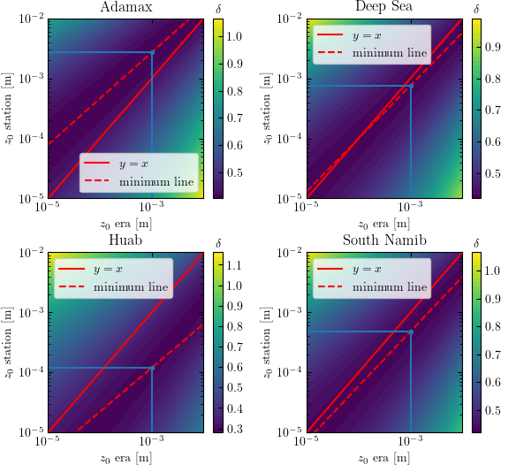

Note
Click here to download the full example code
Calibration of the hydrodynamic roughness¶
For each station, the hydrodynamic roughness is calibrated by finding the one that minimizes the difference between the wind vectors of both datasets.
we compute the difference between wind vectors using hydrodynamic roughnesses ranging from \(10^{-5}\) m to \(10^{-2}\) m.
we find the minimum in this space, which is a line.
we impose an hydrodynamic roughness of \(10^{-3}\) m for the Era5Land dataset, and compute the corresponding roughness for the in situ dataset.
The chosen metric for comparison is then:
\[\delta = \frac{\sqrt{\langle\| \boldsymbol{u}_{*, \textrm{era}} - \boldsymbol{u}_{*, \textrm{station}} \|^{2}\rangle_{t}}}{\sqrt{ \langle \| \boldsymbol{u}_{*, \textrm{era}} \| \rangle_{t}\langle \| \boldsymbol{u}_{*, \textrm{station}} \| \rangle_{t}}}\]

Out:
Adamax_Station: z0 = 2.7e-03 m
Deep_Sea_Station: z0 = 7.6e-04 m
Huab_Station: z0 = 1.2e-04 m
South_Namib_Station: z0 = 4.8e-04 m
import numpy as np
import matplotlib.pyplot as plt
import os
import sys
sys.path.append('../../')
import python_codes.theme as theme
from python_codes.general import smallestSignedAngleBetween, cosd, sind, find_mode_distribution
from python_codes.meteo_analysis import mu
theme.load_style()
#
import warnings
warnings.filterwarnings("ignore", category=RuntimeWarning)
# paths
path_savefig = '../../static/output_data/figures/'
path_ouputdata = '../../static/output_data/data/'
# Parameters
z_era = 10 # height of ERA5Land wind data [m]
z0_era = 1e-3 # hydrodynamic roughness chosen for the Era5Land dataset [m]
g = 9.81 # gravitational acceleration [m2/s]
z_station = {'Adamax_Station': 3.18, 'Deep_Sea_Station': 2.62, 'Huab_Station': 2, 'South_Namib_Station': 2.62} # Height of wind measurements [m]
angle_tolerance = 15 # tolerance in selecting the wind orientation matching between both datasets
# parameter space exploration
z0_station_vals = np.logspace(-5, -2, 50)
z0_era_vals = np.logspace(-5, -2, 50)
Z0_ERA, Z0_STATION = np.meshgrid(z0_era_vals, z0_station_vals)
# Storage for figure
Metrics = []
Pvals = []
Data = np.load(os.path.join(path_ouputdata, 'Data_preprocessed.npy'), allow_pickle=True).item()
z0 = {}
for station in sorted(Data.keys()):
Delta_orientation = smallestSignedAngleBetween(Data[station]['Orientation_era'], Data[station]['Orientation_station'])
mode_delta_orientation = find_mode_distribution(Delta_orientation[~np.isnan(Delta_orientation)], 100)
#
# Computing mask for only valid data (U > 0 and Delta_orientation small enough)
mask_gen = (~np.isnan(Data[station]['U_station'])) & (Data[station]['U_station'] > 0)
mask_angle = (Delta_orientation >= mode_delta_orientation - angle_tolerance) & (Delta_orientation <= mode_delta_orientation + angle_tolerance)
mask = mask_gen & mask_angle
#
# Computing the shear velocity for all possible values of hydrodynamic roughness
u_star_era = Data[station]['U_era'][mask][:, None, None]/mu(z_era, Z0_ERA[None, :, :])
u_star_station_avg = Data[station]['U_station'][mask][:, None, None]/mu(z_station[station], Z0_STATION[None, :, :])
#
# Computing wind velocity in cartesian coordinates
ux_station, uy_station = u_star_station_avg*cosd(Data[station]['Orientation_station'][mask][:, None, None]), u_star_station_avg*sind(Data[station]['Orientation_station'][mask][:, None, None])
ux_era, uy_era = u_star_era*cosd(Data[station]['Orientation_era'][mask][:, None, None]), u_star_era*sind(Data[station]['Orientation_era'][mask][:, None, None])
#
# Computing norm of the relative difference between both datasets
U_star_era, U_star_station = np.array([ux_era, uy_era]), np.array([ux_station, uy_station])
metric = np.sqrt(np.mean(np.linalg.norm(U_star_era - U_star_station, axis=0)**2, axis=0))
metric = metric/np.sqrt(u_star_era.mean(axis=0)*u_star_station_avg.mean(axis=0))
#
# Finding minimum
x = np.copy(z0_era_vals)
y = z0_station_vals[metric.argmin(axis=0)]
p = np.polyfit(np.log(x[:-7]), np.log(y[:-7]), 1)
Data[station]['z0_station'] = np.exp(p[1])*z0_era**p[0]
print(station + ': z0 = ' + '{:.1e}'.format(Data[station]['z0_station']) + ' m')
#
# Storage for figure
Metrics.append(metric)
Pvals.append(p)
#
# completing dataset
Data[station]['U_star_era'] = Data[station]['U_era']/mu(z_era, z0_era)
Data[station]['U_star_station'] = Data[station]['U_station']/mu(z_station[station], Data[station]['z0_station'])
Data[station]['z_station'] = z_station[station]
np.save(os.path.join(path_ouputdata, 'Data_final.npy'), Data)
# ########### Making figure
plt.figure(figsize=(theme.fig_width, 0.9*theme.fig_width))
for i, (p, metric, station) in enumerate(zip(Pvals, Metrics, sorted(Data.keys()))):
plt.subplot(2, 2, i + 1)
cs = plt.contourf(z0_era_vals, z0_station_vals, metric, levels=50)
for c in cs.collections:
c.set_edgecolor("face")
plt.plot(z0_era_vals, z0_station_vals, 'r', label='$y=x$')
plt.plot(x, np.exp(p[1])*x**p[0], 'r--', label='minimum line')
a, = plt.plot([z0_era_vals.min(), 1e-3], [Data[station]['z0_station'], Data[station]['z0_station']])
plt.plot([1e-3, 1e-3], [z0_station_vals.min(), Data[station]['z0_station']], color=a.get_color())
plt.plot(1e-3, Data[station]['z0_station'], '.', color=a.get_color())
cb = plt.colorbar()
cb.set_ticks(np.arange(np.round(metric.min(), decimals=1), np.round(metric.max(), decimals=1) + 0.1, 0.1))
cb.ax.xaxis.set_label_position('top')
cb.ax.set_xlabel(r'$\delta$')
plt.gca().set_yscale('log')
plt.gca().set_xscale('log')
plt.xlim([z0_era_vals.min(), z0_era_vals.max()])
plt.ylim([z0_station_vals.min(), z0_station_vals.max()])
plt.gca().set_title(station[:-8].replace('_', ' '))
plt.xlabel('$z_{0}$ era~[m]')
plt.ylabel('$z_{0}$ station~[m]')
plt.legend()
plt.subplots_adjust(0.093, 0.07, 0.97, 0.96, 0.33, 0.3)
plt.savefig(os.path.join(path_savefig, 'roughness_calculation.pdf'))
plt.show()
Total running time of the script: ( 0 minutes 9.418 seconds)